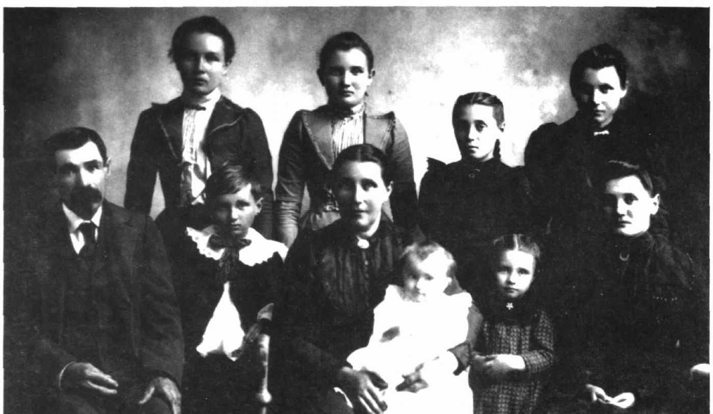

Daughter of Andrew Kastl · Andrew’s branch
Barbara Elizabeth Kastl
1885–1933

What the book records
| Born | 29 September 1885, Plasi, Saunders County, Nebraskap. 57 p. 59 |
|---|---|
| Lived | A farm near Brainard, later the town of Brainardp. 59As printed
|
| Married | John F. Rech, 24 October 1905, Plasip. 57 p. 59 |
| Died | 4 February 1933p. 57 p. 59 |
Family
Parents
Andrew Kastl 1853–1906 and Barbara Valecka 1861–1948
Spouse
John F. Rech 1885–1937
Married 24 October 1905, Plasi p. 57 p. 59
Children
- Helen Rech b. 1906
- Rudolph Rech b. 1916
Read the chapter in the book: p. 59.